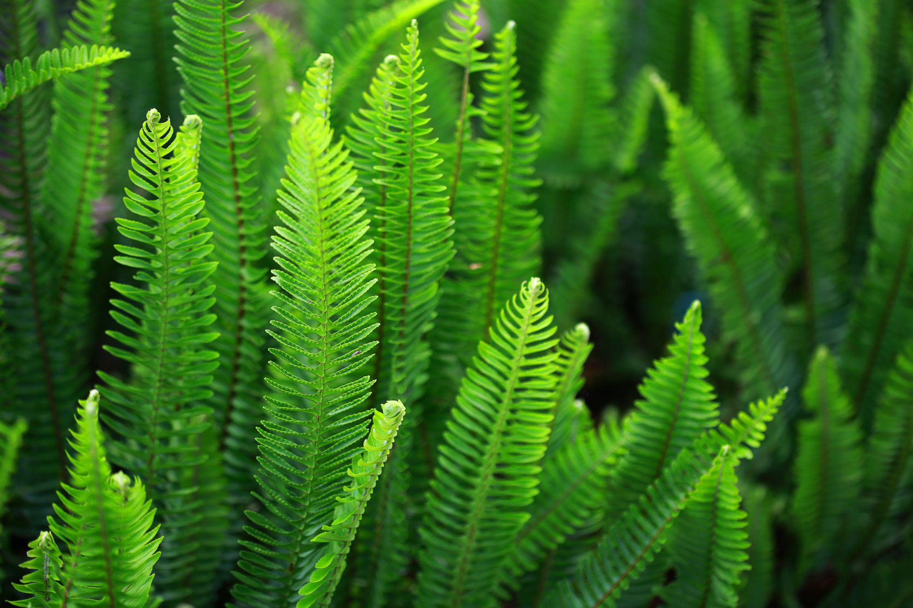

Classification of Plants
Plants are broadly classified into vascular and non-vascular groups based on their structural organization and ability to transport water and nutrients. Vascular plants, like trees, flowers, and grasses, have a specialized vascular system (xylem and phloem) for efficient transport. Non-vascular plants, like mosses and liverworts, lack this system and rely on simpler methods for water and nutrient absorption.
Non Vascular Plants:
 Characteristics: Lack a vascular system and instead have simpler structures for water and nutrient transport. Typically found in moist and shady environments. Have a dominant gametophyte generation.
Examples: Mosses, liverworts, and hornworts.
Reproduction: Often reproduce sexually through spores, requiring water for fertilization. Asexual reproduction (vegetative propagation) is also common.
Characteristics: Lack a vascular system and instead have simpler structures for water and nutrient transport. Typically found in moist and shady environments. Have a dominant gametophyte generation.
Examples: Mosses, liverworts, and hornworts.
Reproduction: Often reproduce sexually through spores, requiring water for fertilization. Asexual reproduction (vegetative propagation) is also common.
Vascular Plants
Characteristics: Possess a well-developed vascular system (xylem and phloem) for efficient water and nutrient transport. Have true roots, stems, and leaves. Can be found in various habitats, including dry and sunny environments. Examples: Trees, flowers, ferns, conifers, and grasses.
Vascular plants further classified into 2 types
- Seedless Vascular Plants
- Seed-producing Vascular Plants
Seed-producing Vascular Plants
These reproduce using seeds and are further classified into:i. Gymnosperms (Naked seeds)
Examples: Pine, Fir, Cycas Features:- Usually needle-like leaves
- Seeds are not enclosed in fruit
- Cones are used for reproduction
ii. Angiosperms (Flowering plants)
Examples: Rose, Mango, Grass, Sunflower Features:- Seeds enclosed in fruits
- Produce flowers
- Most diverse group of plants